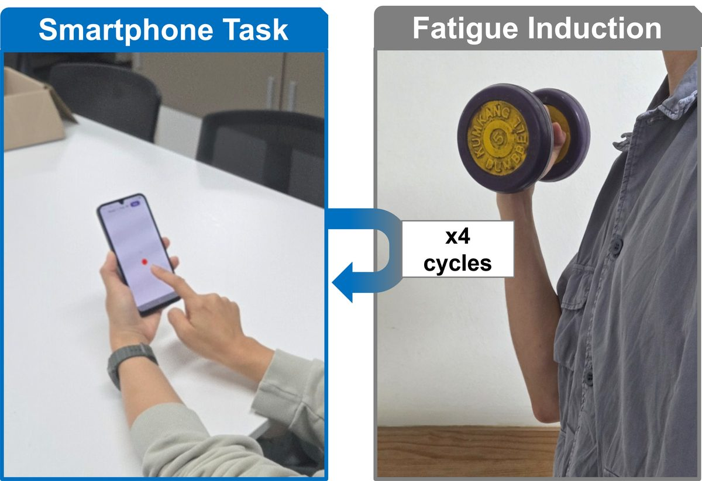
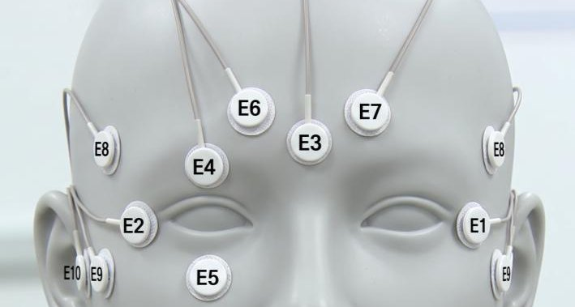
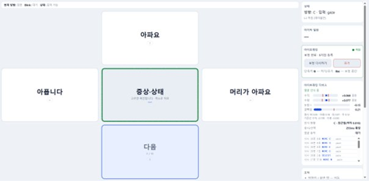

연구 · 프로젝트 최근 순
스마트폰 터치 기반 작업자 상태 센싱 — 석사 학위논문
2025.08 ~ 진행 중 · 제1저자 · IEEE Transactions on Industrial Informatics 투고(심사 중)
기존 생체신호 센서는 전극 부착과 비용, 착용 부담 때문에 현장에 정착하기 어렵습니다. 이미 손에 있는 상용 스마트폰의 터치스크린을 상태 센서로 쓰는 접근을 제안하고, 실험 설계부터 모델 개발과 배포 검증까지 수행했습니다.
- 데이터 수집용 스마트폰 터치 과제 앱을 직접 개발하고 통제된 실험 프로토콜을 설계
- 피험자 독립 교차검증으로 처음 보는 사용자에게도 일반화되는지 평가
- 단말에서 직접 추론하도록 구성해 지연 시간·개인정보·인구통계 안정성을 함께 검증

실험 프로토콜 — 스마트폰 터치 과제 수행과 통제된 피로 유발 절차를 번갈아 반복하며 상태 변화를 측정
모바일 앱 개발실험 설계신호·시계열 분석
머신러닝설명가능 AI온디바이스 추론
논문 작성
국가 R&D — 지역필수의료 AI 플랫폼 — 참여연구원
2026.07 ~ 진행 중 · 한국형 ARPA-H 프로젝트 · 보건복지부 / 한국보건산업진흥원
여러 AI 에이전트가 협업하는 의료 플랫폼 과제에 제안서 작성 단계부터 참여하고 있습니다. 사람과 AI가 함께 판단하는 지점의 설계를 맡고 있습니다.
- HITL(Human-in-the-Loop) 인터페이스와 사용자 기반 데이터 규격 정의
- Safety layer의 interaction specification 설계 — 안전 기준을 벗어날 때 사람에게 넘기는 방식
- 병원 임상팀 및 컨소시엄 참여 기업과 협업
Agentic AIHITL 설계AI 안전성
요구사항 규격화산·학·병 협업국가과제
멀티모달 생체신호 기반 의사소통 보조 솔루션 — 팀 대표
2026.08 ~ 진행 중 · 2026 연구 아이디어 기술사업화 챌린지 (보건복지부 / 한국보건산업진흥원)
말과 타이핑이 어려운 중증 운동장애 환자가 남아 있는 생체신호만으로 대화할 수 있게 하는 솔루션입니다. 공학·의학 4인 팀을 꾸려 대표를 맡고 있습니다.
- 시스템을 신호–의도 변환부와 의도–발화 생성부로 분리하고 인터페이스 규약을 먼저 확정
- 가상 이벤트 생성기를 두어 두 파트가 서로 기다리지 않고 병행 개발하도록 구성
- 임상 요구 정의부터 시스템 아키텍처까지 총괄

입력 — 눈 주변과 이마에 부착한 전극으로 안구 전위(EOG)를 측정합니다. 시선이 움직이거나 눈을 감을 때 생기는 미세한 전위 변화를 신호로 받아, 환자가 말이나 손을 쓰지 않아도 의도를 전달할 수 있습니다.

출력 — 선택지를 화면에 띄우고, 시선과 깜빡임만으로 고르면 문장을 완성해 음성으로 출력합니다. 환자의 부담을 줄이기 위해 한 화면의 선택지 수를 최소화한 초안입니다.
팀 리딩시스템 아키텍처멀티모달 생체신호
경량 딥러닝LLM 응용TTS의·공학 협업
임상 협업 LLM 시뮬레이션 시스템 — 설계 및 백엔드 구현
2026.06 ~ 진행 중 · 간호대학 임상 자문진과 공동 연구 · 운영 중
기존에 사람이 수행하던 훈련 시나리오를 LLM 시뮬레이션으로 대체하는 시스템입니다. 대화 설계부터 백엔드 전체를 직접 구현해 운영 단계까지 가져갔습니다.
- 실제 데이터를 근거로 대화 상태를 제어하는 구조와 자동 평가 체계를 설계
- REST API 서버를 도메인별로 모듈화하고 비동기 ORM·마이그레이션으로 다중 DB 지원
- 컨테이너화와 외부 연동 서버 장애 격리까지 구성해 실제 연구 과제에 투입
- 음성 입출력, 세션 로깅 등 서비스 인프라 구축
LLM 애플리케이션RAG백엔드 개발
REST API 설계DB 마이그레이션Docker
STT / TTS운영
제조 공정 데이터 분석 AI — 산학협력 연구원
2026.04 ~ 2026.10 · 기업 공동 과제
공정 조건과 품질 프로파일의 관계를 예측·역예측하는 과제입니다. 데이터 파이프라인부터 모델링·검증·보고까지 분석 실무를 단독 수행했습니다.
- 고차원 곡선 출력을 다루기 위한 차원 축소 + 부스팅 파이프라인 구축
- 기존 분석 코드의 전처리 데이터 리키지를 발견·제거하고 성능 기준선을 재확립
- 미보유 장비에 대한 일반화 평가, 데이터 버전·해시 관리로 재현성 확보
제조 공정 데이터회귀·최적화Gradient Boosting
차원 축소데이터 품질 검증전이학습재현성 관리
호흡음 기반 실내 환경 예측 — 개인 연구
2025.03 ~ 2025.10 · 제1저자 · 한국재활복지공학회 정기학술대회 포스터 발표
별도 센서 없이 상용 기기의 내장 마이크로 수집한 호흡음만으로 실내 환경 변수를 역추정할 수 있는지 검증한 탐색 연구입니다.
- 음향 수집 웹 도구와 환경 측정용 센서 장치를 직접 구성해 동시 수집
- 사전학습 임베딩 기반 특징 추출, 시계열 정렬, 다수 회귀 모델 비교
오디오 AI임베딩 추출시계열 회귀
센서·하드웨어 구성웹 개발단독 수행
연락
연구·프로젝트의 상세 내용, 코드, 실험 자료는 요청해 주시면 개별적으로 안내드립니다.
본 페이지의 연구·과제 내용은 연구윤리(IRB) 및 과제 보안 범위를 고려해 개요 수준으로만 기술했습니다.
구체적인 실험 설계, 데이터, 성능 수치, 기업 과제 상세는 공개 범위를 확인한 뒤 별도로 제공드립니다.